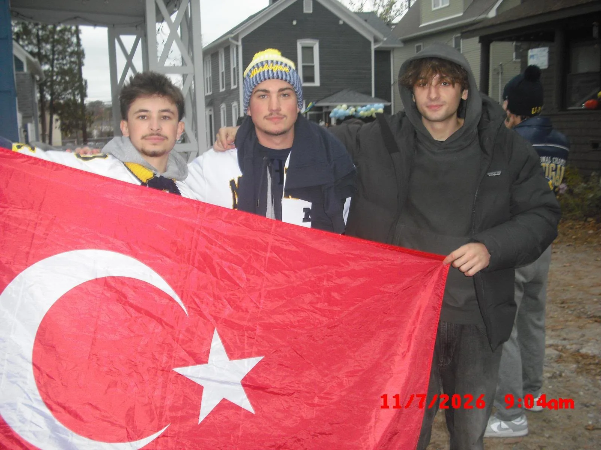
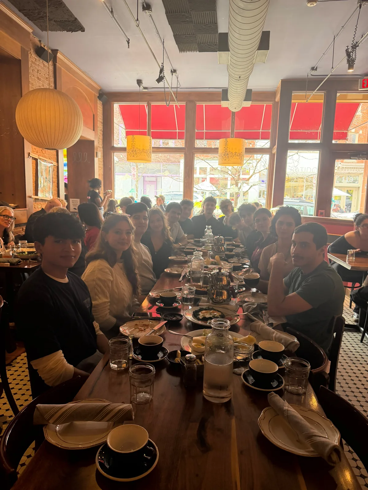
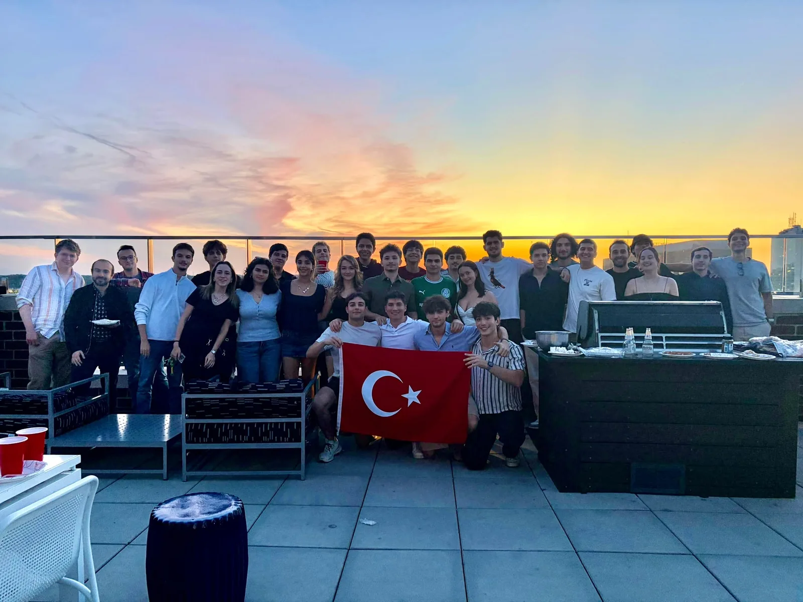
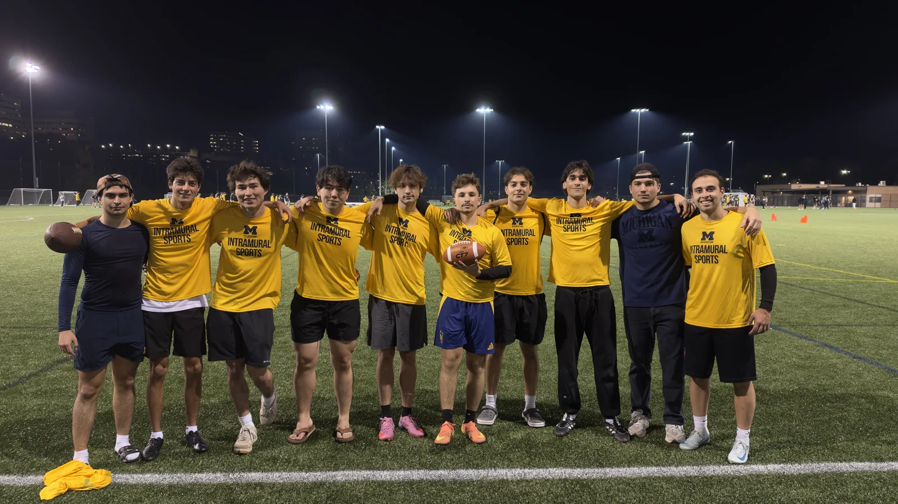

Maç Günü
Tailgate & Game Day
TSA members gathering for a Michigan game day.
TSA gatherings, cultural programs, and past-event photographs.
Yaklaşan Etkinlikler
The next TSA event will be announced here.
Event recaps & photo albums

TSA members gathering for a Michigan game day.

Celebrating Turkish Republic Day with a community brunch.

A rooftop barbecue at Vic South to welcome the new semester.

TSA members on the soccer field.